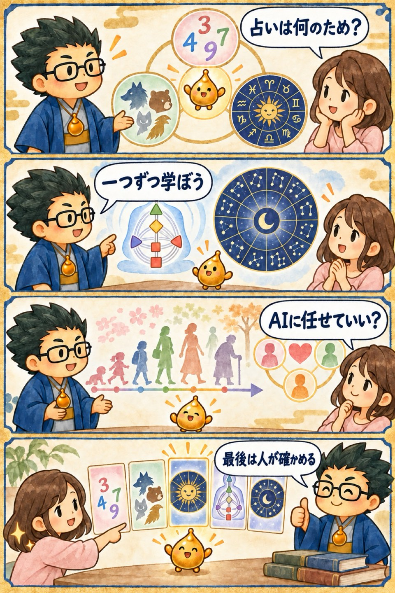

第2期 Zoom講座・第1回
占いを学ぶ理由と全体像
この回の要約
占いを「当てる技術」だけで終わらせず、自分と相手の設計図を理解し、日常の選択へつなげるための導入回です。
占いは人を型に閉じ込めるためではなく、理解と対話の入口として使います。
複数の占術を一度に暗記せず、共通する構造を見つけて段階的に学びます。
AIは答えを任せる相手ではなく、資料整理や言語化を助ける道具として扱います。
4コマ漫画でつかむ

タイムスタンプ
時間を押すと、上の動画がその場面から再生されます。
覚えておきたいこと
- 学びの姿勢知識を増やす前に、何のために読むのかを決める
- 設計図生まれ持った傾向と、後から身につけた習慣を分けて見る
- インド占星術ナクシャトラや時期読みを、人の理解に結びつける
- 相性点数だけで決めず、関係を育てる材料にする
- AI資料の比較・整理・質問づくりに使う
復習ポイント
講義内の占術上の説明・時代の読み・象徴的な解釈は、講師の見立てです。客観的な事実や将来を保証するものではありません。